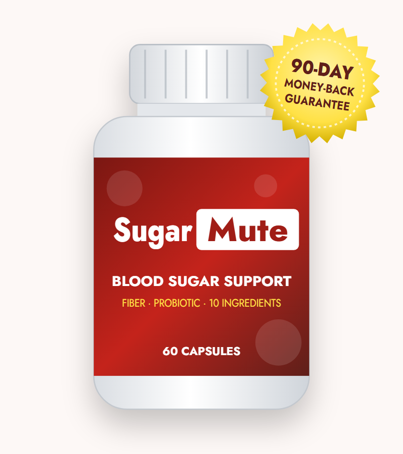
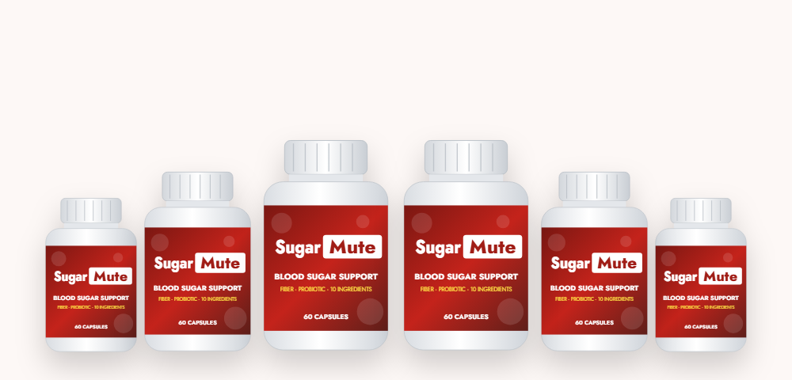

Slowing Sugar Absorption
Soluble fibers form a gel in the gut that slows how fast carbohydrates are absorbed, flattening after-meal spikes.*
What the SugarMute label really contains, what fiber can do for blood sugar, and how to buy Sugar Mute safely

SugarMute (also searched as Sugar Mute) is a capsule supplement advertised for healthy blood sugar and energy. Behind the dramatic ad is a fairly simple formula: a 1.5 g blend of fiber, clay, fruit and a probiotic. In this SugarMute review we go through the label, explain what research says about fiber and blood sugar, cover safety, and lay out the current price and how to order from the SugarMute official website.
The SugarMute supplement is sold online as an "advanced blood sugar support" formula. Each bottle has 60 capsules, and the label directs two capsules a day with a meal, so a bottle lasts a month. The label lists sugarmute.com of Aurora, Colorado as the distributor, and checkout is handled by BuyGoods.
The ad that leads to the product is styled like a news article about a "diabetes parasite," complete with comments praising "Dr. Daniel." The product itself is much more ordinary: a 1.5 g proprietary blend of soluble fibers (psyllium, glucomannan, oat bran, apple pectin, flaxseed), bentonite clay, black walnut hull, plum, aloe vera and one probiotic strain.
That makes the formula closer to a gentle fiber and "cleanse" supplement than a classic blood sugar formula — there's no chromium, berberine, cinnamon or gymnema on the label.
It's a supplement, not a treatment for diabetes or prediabetes. It shouldn't replace medication, diet changes or regular glucose checks.
Soluble fibers form a gel in the gut that slows how fast carbohydrates are absorbed, flattening after-meal spikes.*
Glucomannan and psyllium absorb water and expand, which can help you feel full.*
Lactobacillus acidophilus and prebiotic fibers support gut bacteria; plum and aloe aid regularity.*
These mechanisms are real, but they depend on the amount of fiber. Studies showing meaningful effects on blood sugar typically use 5–15 grams of soluble fiber a day, often split before meals. One serving provides 1.5 g of total blend, and part of that is clay, black walnut and other ingredients — so the fiber dose is a fraction of what research uses.
The supplement facts label, per two-capsule serving.
| Ingredient (in 1.5 g blend) | What it is | Why it's included |
|---|---|---|
| Psyllium husk | Soluble fiber | After-meal glucose, cholesterol, regularity |
| Bentonite clay | Volcanic clay | "Detox" marketing; binds substances in the gut |
| Black walnut (hull) | Tree nut hull | Traditional antiparasitic herb |
| Oat bran | Beta-glucan fiber | Blood sugar and cholesterol support |
| Flaxseed | Fiber and omega-3 seed | Fiber and plant lignans |
| Plum (fruit) | Prune powder | Regularity |
| Aloe vera (leaf) | Plant extract | Digestive soothing; mild laxative |
| Lactobacillus acidophilus | Probiotic | Gut bacteria balance |
| Apple pectin | Soluble fiber | Slows sugar absorption |
| Glucomannan (konjac root) | Highly absorbent fiber | Fullness and after-meal glucose |
Other ingredients: gelatin, magnesium stearate, silicon dioxide. Contains tree nuts (walnuts). Made in a facility that may also process milk, soy, wheat, egg, peanuts, tree nuts, fish and shellfish.
| Ingredient | Studied dose | Evidence for blood sugar |
|---|---|---|
| Psyllium | 10 g/day | Good — lowers fasting glucose and A1C in type 2 diabetes |
| Glucomannan | 3–4 g/day | Moderate — after-meal glucose and cholesterol |
| Oat beta-glucan | 3–4 g/day | Moderate — after-meal glucose |
| Flaxseed | 10–30 g/day | Some small benefits |
| Probiotics | Varies | Small, inconsistent effects |
| Bentonite clay, black walnut | — | No evidence for blood sugar |
The good news is that the core idea — soluble fiber for blood sugar — is well supported. Psyllium in particular has solid research in people with type 2 diabetes. The problem is quantity: the studied doses are measured in grams, often 10 g a day, while the entire serving is 1.5 g. You'd get far more fiber from a tablespoon of psyllium powder or a bowl of oatmeal.
The ad's testimonials — A1C falling from 8.2 to 6.8, numbers "200+ to 120" — use the same wording as ads for other products from the same network, and they can't be verified.
Our take: this is a small-dose fiber and probiotic blend. It may help regularity and give a slight after-meal benefit, but it's unlikely to change blood sugar meaningfully on its own.
Fiber is the part of plant food your body can't digest, and it comes in two main types. Understanding the difference explains why fiber supplements are popular for blood sugar — and why the dose matters so much.
Soluble fiber dissolves in water and forms a thick gel in the stomach and small intestine. That gel slows down how quickly food leaves the stomach and how fast glucose reaches the bloodstream, so blood sugar rises more gently after a meal. Psyllium, glucomannan, oat beta-glucan and apple pectin are all soluble fibers. In clinical trials, about 10 grams of psyllium a day lowered fasting glucose and A1C in people with type 2 diabetes, and similar doses also lowered LDL cholesterol.
Insoluble fiber, found in wheat bran, nuts and vegetable skins, adds bulk and helps food move through the gut. It's important for regularity but has a smaller direct effect on blood sugar.
Most adults eat around 15 grams of fiber a day, while guidelines recommend 25–38 grams. Closing that gap with food — beans, lentils, oats, berries, vegetables and whole grains — usually adds 10–20 grams. A capsule product can only hold a gram or two, which is why fiber powders (taken by the teaspoon) and fiber-rich meals are much more effective than fiber capsules.
The ad is titled "'Diabetes Parasite' Exposed — Do This Before You Eat." There is no medical evidence that a parasite causes type 2 diabetes. The condition develops when the body's cells become resistant to insulin and the pancreas can't keep up, driven by genetics, excess weight (especially around the waist), inactivity, diet, sleep and age.
The "parasite" story likely explains why black walnut hull — a traditional antiparasitic herb — and bentonite clay are in the formula. Neither has evidence for blood sugar control.
Gut bacteria, on the other hand, are a legitimate research topic: people with type 2 diabetes tend to have different gut microbiomes, and fiber feeds beneficial bacteria. That's a reasonable reason to eat more fiber — not evidence of a parasite.
Realistic benefits of this formula.*
Soluble fiber slows carbohydrate absorption.*
Psyllium, plum and aloe support regular bowel movements.*
Glucomannan expands with water to help you feel full.*
A probiotic plus prebiotic fibers.*
If you want to test it, check your after-meal readings for two weeks before starting and compare them over the next month — well within the 90-day guarantee.
SugarMute is a small-dose fiber, clay and probiotic blend sold with an alarming, unsupported story. Fiber genuinely helps blood sugar, but you'd need much more of it than these capsules provide — psyllium powder, oats, beans and vegetables deliver far more for less money. If you still want to try it, take it with plenty of water, keep it away from your medicines, and use the 90-day guarantee if you see no difference in your readings.
Visit the SugarMute Official Website| Option | Fiber per day | Typical cost | Evidence |
|---|---|---|---|
| SugarMute | Under 1.5 g blend | $49–$79 per month | No product trial |
| Plain psyllium powder | 5–10 g | $5–$15 per month | Good |
| High-fiber diet | 25–35 g | Groceries | Strong |
| Prescription medicine (e.g. metformin) | — | Low with insurance | Strong |
Food order can noticeably reduce after-meal spikes.
Beans, lentils, oats, berries, vegetables and whole grains do the heavy lifting.
Ten to fifteen minutes of walking helps muscles absorb glucose.
Liquid sugar raises blood glucose fastest.
Short sleep worsens insulin resistance.
A1C and fasting glucose show what's really working.
Search for the SugarMute official website and you'll see sites like sugarmute.mediprimes.com and sugarmute.mediprime.org alongside the vendor's own pages. To buy genuine Sugar Mute:
Each SugarMute bottle is a 30-day supply, covered by the 90-day money-back guarantee.
60-Day Supply · Try Two
$79/bottle
No bonuses
180-Day Supply
$49/bottle
+ 2 free e-books
90-Day Supply · Most Popular
$59/bottle
+ 2 free e-books
Prices checked on the official order page on October 18, 2026 and may change. Bonuses: "Clear Mind, Sharp Memory" and "Hello, Radiant Energy" e-books. One-time payment.

Every SugarMute order from the official website comes with a 90-day money-back guarantee. Contact the vendor's support team within 90 days of purchase if you're not satisfied.
Keep your receipt and start the process well before the deadline.
Try SugarMute Risk-FreeSugarMute is a dietary supplement sold for blood sugar support. Its label lists a 1.5 g proprietary blend per two-capsule serving of psyllium husk, bentonite clay, black walnut hull, oat bran, flaxseed, plum, aloe vera leaf, Lactobacillus acidophilus, apple pectin and glucomannan — essentially a fiber, clay and probiotic formula.
Soluble fibers like psyllium and glucomannan can modestly lower after-meal blood sugar when taken in amounts of about 5 to 10 grams a day before meals. SugarMute provides 1.5 g of total blend, so any effect is likely small. There is no published trial on SugarMute itself, and it is not a diabetes treatment.
The vendor's order page is part of its own website, with checkout handled by BuyGoods. Look-alike sites with names such as sugarmute.mediprimes.com and sugarmute.mediprime.org also appear in search results. Orders through the vendor's page include the 90-day money-back guarantee.
On the official order page SugarMute costs $79 per bottle for 2 bottles ($158 plus shipping), $59 per bottle for 3 bottles ($177 with free US shipping) and $49 per bottle for 6 bottles ($294 with free US shipping). The 3- and 6-bottle packages include two free e-books.
The label says adults take two capsules daily with a meal and at least a full glass of liquid. Taking fiber without enough liquid can cause choking, so do not take it if you have trouble swallowing.
Fiber can cause gas, bloating and changes in bowel habits, and plum and aloe can have a laxative effect. Bentonite clay and fiber may reduce the absorption of medicines, so take SugarMute at least two hours apart from prescription drugs. SugarMute contains walnut, a tree nut allergen.
Ask your doctor first. Fiber can slightly lower blood sugar and may change how some medicines are absorbed. Keep checking your glucose and never stop prescribed medicine on your own.
No. The SugarMute ad's "diabetes parasite" story is not supported by medical research. Type 2 diabetes is driven by insulin resistance and reduced insulin production, linked to genetics, weight, activity and diet — not parasites.
No. SugarMute is sold as a one-time payment for the package you choose.
SugarMute comes with a 90-day money-back guarantee. Contact the vendor within 90 days of purchase if you are not satisfied.
Both spellings refer to the same blood sugar supplement. The label reads SugarMute, and many people search for it as Sugar Mute.
No. Despite the similar names and sales pages, the formulas are different. SugarMute is a fiber, clay and probiotic blend, while GlycoMute's label lists vitamins, minerals and botanicals such as chromium, gymnema and bitter melon.
Get SugarMute for as little as $49 per bottle with free US shipping on the 6-bottle package — with two free e-books and a 90-day money-back guarantee.
Order SugarMute Now